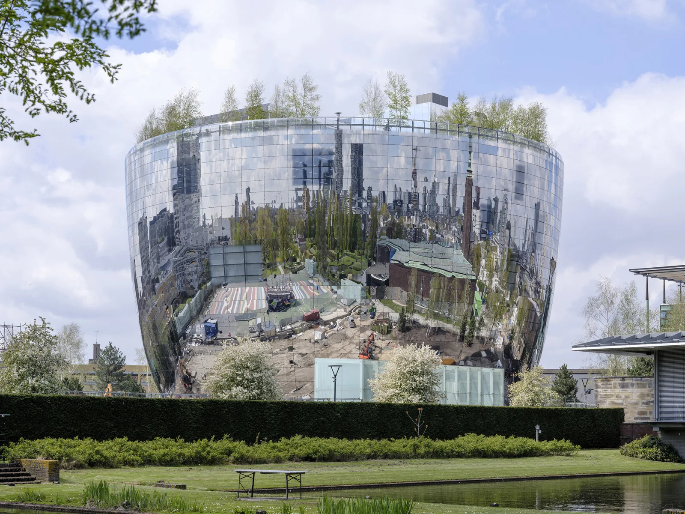
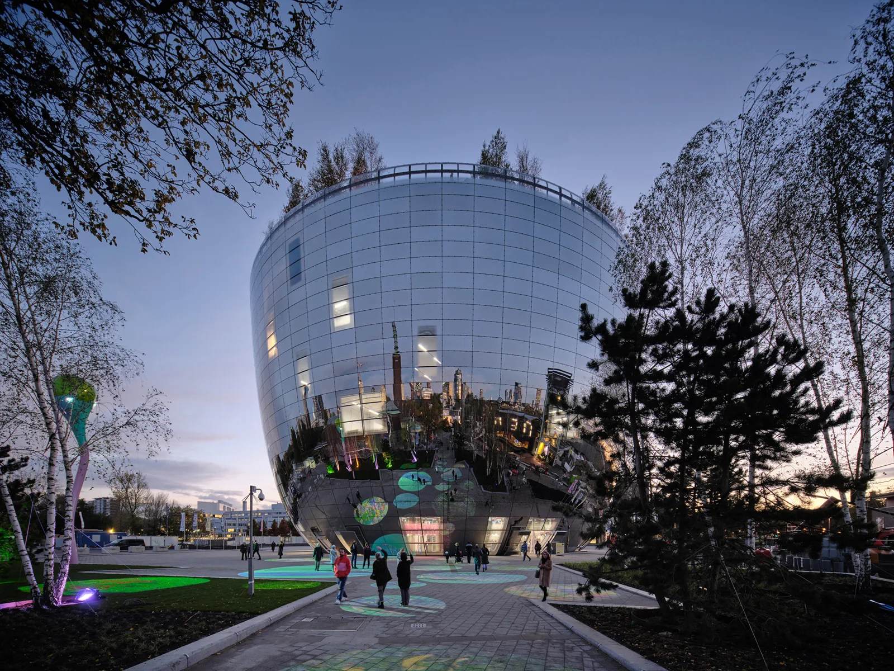
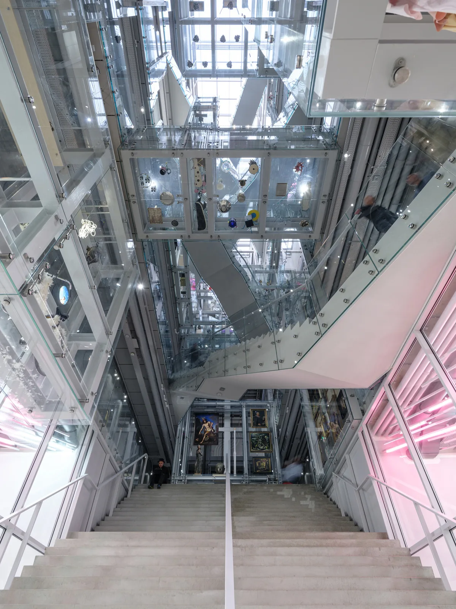
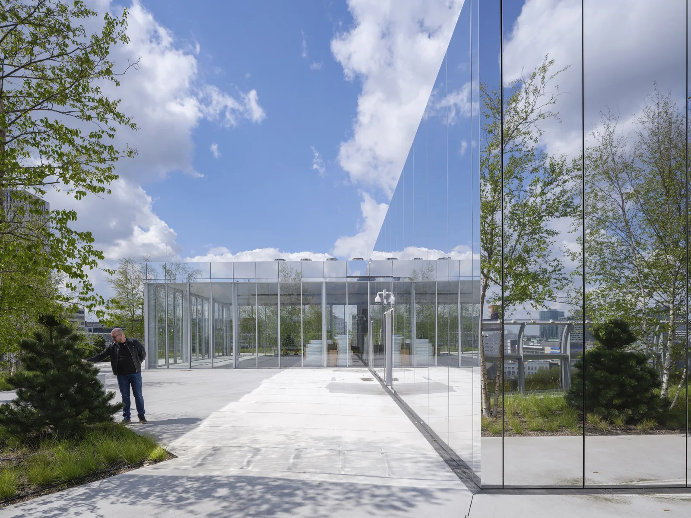
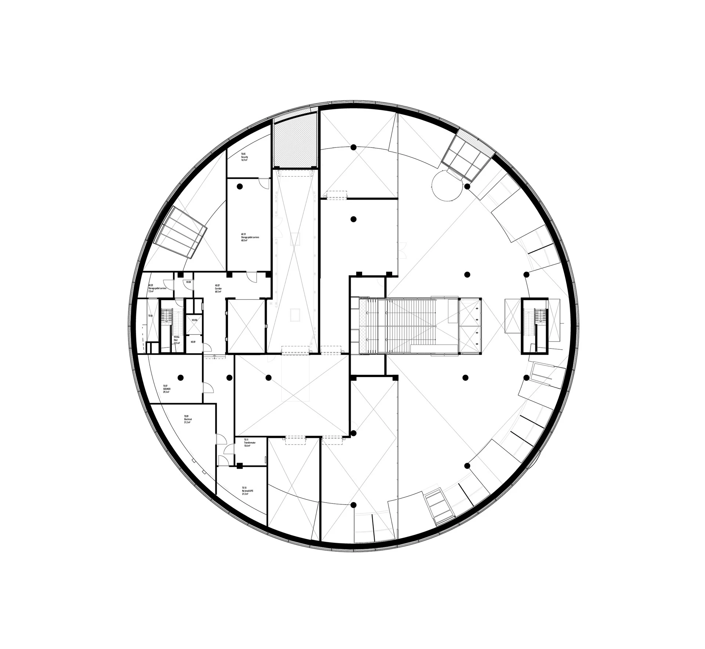
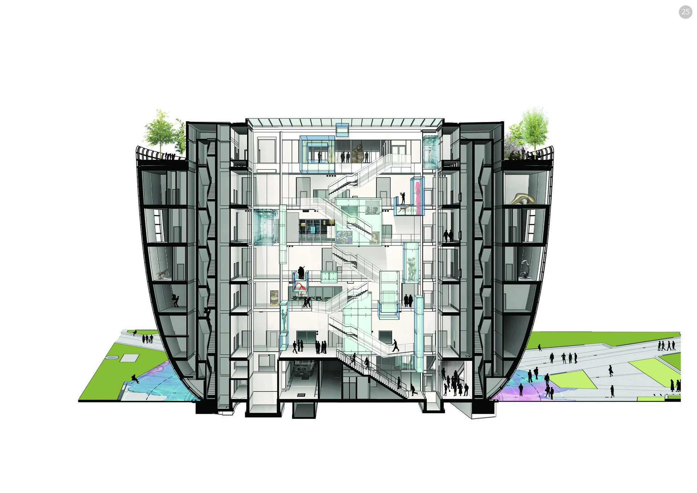

Public art depot · 2020
Depot Boijmans Van Beuningen
MVRDV
Rotterdam, Netherlands
Art storage, conservation and restoration share a building with public routes and displays. Visitors can see both the collection and the work required to care for it, following an atrium route towards the rooftop garden.
The widening bowl shape reduces the footprint in the park while enlarging the roof. Inside, artworks are grouped by their climatic requirements rather than period or artistic movement, so the practical demands of preservation become a principal organising system.


Relevant connections
Images and drawings / 06









